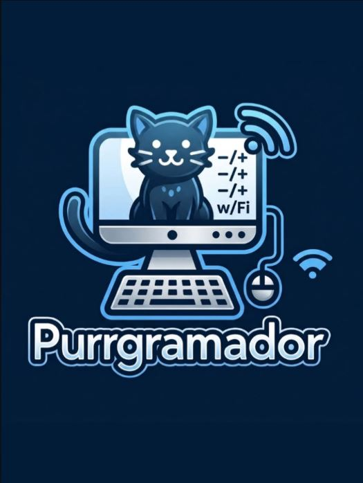

Entra en la historia
Una misión plantea el contexto y el objetivo que guían el aprendizaje.

Purrgramador une conceptos, desafíos y narrativa en una experiencia guiada: cada misión te invita a aprender haciendo.
El recorrido central que busca validar este MVP.
Una misión plantea el contexto y el objetivo que guían el aprendizaje.
Practica un concepto de programación dentro de la situación narrativa.
El progreso muestra qué parte del recorrido se ha completado.
La historia es la experiencia central; estas secciones completan la plataforma.
Módulos de ejemplo que muestran cómo podrían organizarse las experiencias.
Cada tarjeta representa una propuesta de contenido.
No hay módulos que coincidan con la búsqueda.
El catálogo puede reunir materiales propios y fuentes externas.
Misión de ejemplo para practicar una instrucción de salida dentro de una historia guiada.
El terminal de una estación dejó de mostrar mensajes. Para comprobar la conexión, escribe una instrucción que permita mostrar “Hola, mundo” en pantalla.
En Python, print() permite mostrar un valor. La sintaxis puede cambiar en otros lenguajes.
Selecciona una respuesta para ver la retroalimentación.
Esta pantalla muestra cómo podría visualizarse el progreso.
Practicar una instrucción de salida.
Etapa de ejemplo · concepto por definir.
Etapa de ejemplo · contenido por definir.
Así podría verse un perfil básico cuando exista el inicio de sesión.
Cuenta demostrativa · sin inicio de sesión
Editor HTML/CSS/JS con vista previa en vivo. Todo lo que escribas se guarda en tu navegador.
Alcance funcional del laboratorio.
Rutas preestablecidas y ofrecidas por Purrgramador.
La persona sube material y aprende interactivamente.
Actividades tipo examen, trivia o prueba colaborativa.
Purrgramador difunde oportunidades externas. Cada ficha real debe enlazar a su fuente original.
Filtros del catálogo demostrativo.
Los avisos visibles son fichas vacías de demostración.
La web reúne artículos propios y publicaciones de Instagram en un mismo espacio.
Ejemplos de formatos y temas del plan de Instagram.
Explicación breve con ejemplo y propuesta de siguiente tema.
Especialidad registrada: datos / SQL / Python.
Presentar áreas como IA, datos, diseño, redes y videojuegos.
La red permitiría publicar preguntas, ideas y proyectos bajo reglas comunitarias.
Política de comunidad por revisar antes del lanzamiento.
Convivencia sin acoso ni discriminación.
No compartir datos personales propios ni ajenos.
Reportar contenido y contar con revisión moderadora.
Espacio previsto para la novela en físico, artículos y otros productos.
Sin precios, existencias ni condiciones de despacho definidas.
Ficha preparada para formato, descripción y disponibilidad.
Espacio para artículos relacionados con Purrgramador.
Categoría abierta para futuras ideas y formatos.
Fichas con nombres y especialidades registrados en la biblia del universo.
Datos confirmados. Haz clic en cada tarjeta para ver la ficha.
Dos partes del universo narrativo.
El mundo, la historia y los detalles editoriales se mostrarán cuando estén definidos.
Juego basado en la novela, con movimiento y exploración.
Relaciones, lugares y cronología sujetas a la documentación oficial.